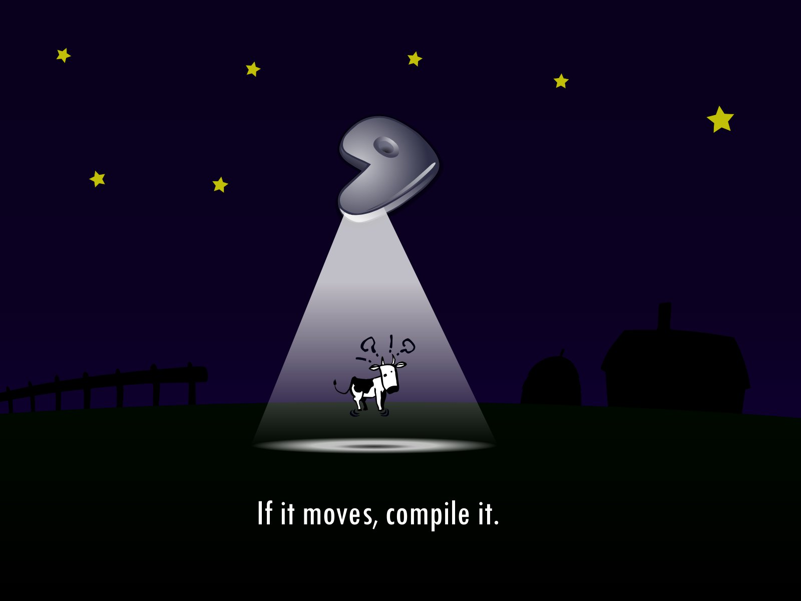

Gentoo Linux en una netbook (2010, parte 3)
A continuación la última entrega de la Guía de instalación de Gentoo Linux para una notebook 2010.

Imagen: Gentoo abducted con Larry The Cow, la mascota de Gentoo Linux, elaborado por Matteo 'Peach' Pescarin.
{kind=link}
Como introducción les escribo un breve FAQ (preguntas y respuestas frecuentes) sobre Gentoo Linux.
- ¿Qué es Gentoo? es un Sistema Operativo libre basado en Linux o FreeBSD que puede ser optimizado y personalizado para casi cualquier aplicación o necesidad. Configuración extrema, desempeño, usuarios y desarrolladores de primera categoría son las distinciones de Gentoo. Más en About Gentoo.
- ¿Es cierto que desde 2008 no se hace un disco de instalación? Hay que aclarar que lo que se necesita para instalar Gentoo Linux es arrancar con un GNU/Linux básico que te dé las herramientas para los dispositivos de almacenamiento y de red, en otras palabras, lo necesario para accesar la red local e internet, descargar, particionar, formatear y ejecutar el chroot. En los repositorios de Gentoo Linux hay imágenes (archivos ISO) de discos booteables con estas herramientas; con nombres como install-x86-minimal-YYYYMMDD.iso por que se liberan nuevas versiones con frecuencia. También puedes hacer la instalación con un disco de otra distribución (por ejemplo Knoppix, arrancando desde una memoria USB o arrancando desde red. Por ello, Gentoo Linux dejó de liberar un disco anual de instalación; no lo necesita.
- ¿Cual es la última versión de Gentoo? Aparecen nuevas versiones de los stages con regularidad, aproximadamente cada 15 días. Por ello, el nombre del archivo contiene el año-mes-día como stage3-i686-YYYYMMDD.tar.bz2. Posteriormente, para actualizar hay que ejecutar emerge -uND world && revdep-rebuild como root y revisar los cambios que solicite cada programa en particular. Es por esto que Gentoo Linux es una distribución de tipo rolling relase donde no hay números de versión.
- ¿Qué pasa si no actualizo una instalación de Gentoo? Al igual que con cualquier otra distribución, puedes actualizar con regularidad para obtener nuevas versiones de tus programas y recibir mejoras en seguridad y correcciones. Si se trata de un servidor conectado a internet o un equipo portátil que se conecta a redes públicas, por seguridad, deberías actualizarlo una vez por semana. En cambio, si se trata de un servidor en una red confiable, puedes ser más flexible y no actualizarlo tan seguido. Son mis recomendaciones; al final la decisión es tuya. Entre más tiempo dejes pasar, más programas se añadirán a la lista de actualizaciones; si dejas pasar más de un año sin actualizar entonces puede convenir hacer una instalación desde cero en lugar de actualizar todo.
- ¿Es Gentoo Linux una distribución segura? Claro que sí; al instalar puedes endurecer el sistema; más información en Hardened Gentoo. Ante el usuario común; el hecho que tú mismo contruyas tu sistema operativo, omitiendo los programas que no necesites, constituye una gran ventaja de seguridad. Por ejemplo, para un servidor web instalarás el Apache pero no le instalarás la compartición de archivos con SAMBA.
- ¿Qué instalación toma más tiempo, la de un equipo de escritorio o la de un servidor? Toma más tiempo instalar un equipo de escritorio, porque los entornos gráficos como Gnome y KDE o las suites de oficina como OpenOffice.org son bastante grandes.
- ¿Soporta otras arquitecturas además de la x86? Si. Gentoo Linux puede usarse en x86, AMD64, Alpha, ARM, HPPA, IA-64, MIPS, PowerPC, PPC64 y SPARC.
- ¿Dónde puedo aprender más de Gentoo? Del sitio oficial he tomado estos enlaces:
Fuera del sitio oficial, te recomiendo:
- Gentoo Wiki.
- Funtoo es un fork dirigido por Danel Robbins, el iniciador de Gentoo Linux.
A continuación la última entrega de la Guía de instalación de Gentoo Linux para una notebook 2010. No deje de leer la primera y segunda partes.
¡A seguir instalando!
Instale herramientas gráficas.
# emerge imagemagick graphviz gd
Para usar mi netbook como ruteador, instalo los servidores de DHCP y DNS, así como los programas para bridge.
# emerge dhcp bind bridge-utils
Instale los mejores programas de multimedia.
# emerge lame mp3splt vorbis-tools faad2 ffmpeg mplayer moc gstreamer
Instale herramentas para hacer auditoria de redes.
# emerge whois traceroute geoip bind-tools
# emerge wireless-tools iw wpa_supplicant
# emerge nmap macchanger aircrack-ng kismet
Instale el editor de texto VIM.
# emerge vim
Instale el entorno de desarrollo Geany.
# emerge geany
Instale PEAR y el Documentador de PHP.
# emerge PEAR-PhpDocumentor
Instale el cliente FTP llamado gFTP.
# emerge gftp
Entorno gráfico XFCE4
Instale XFCE4.
# emerge xfce4-meta mousepad x11-terms/terminal
# emerge gnome-icon-theme tango-icon-theme
# emerge thunar-archive-plugin thunar-media-tags-plugin thunar-thumbnailers thunar-volman
# emerge xfce4-power-manager xfce4-screenshooter xfce4-taskmanager xfce4-mixer
Ahora las aplicaciones grandes
Antes de instalar el navegador de internet, active java en la variable USE dentro de /etc/make.conf.
# Desarrollo
USE="${USE} apache2 java mysql php postgres ruby vhosts"
Luego instale Mozilla Firefox.
# emerge firefox
Actualize los paquetes que dependan de java.
# emereg -uND world
Instale Mozilla Thunderbird.
# emerge thunderbird
Instale GIMP.
# emerge gimp
Instale las dependencias de Turpial.
# emerge simplejson notify-python pygame Babel gtkspell-python pywebkitgtk
Instale LaTeX.
# emerge texlive
Compiz-Fusion
Al momento de escribir esta guía, Compiz-Fusion no había sido marcado como estable. Así que para permitir su instalación creo el archivo /etc/portage/package.keywords
# nano /etc/portage/package.keywords
Con este contenido...
#
# /etc/portage/package.keywords
#
# Compiz
x11-wm/compiz-fusion
x11-plugins/compiz-plugins-main
x11-plugins/compiz-plugins-extra
x11-plugins/compiz-plugins-unsupported
x11-libs/compiz-bcop
x11-libs/compizconfig-backend-gconf
x11-libs/compizconfig-backend-kconfig4
x11-libs/libcompizconfig
x11-wm/compiz
x11-apps/ccsm
dev-libs/protobuf
dev-python/compizconfig-python
x11-apps/fusion-icon
x11-wm/emerald
x11-themes/emerald-themes
Luego, instale Compiz-Fusion.
# emerge compiz-fusion fusion-icon
OpenOffice.org
Si gusta puede instalar la versión precompilada de OpenOffice.org llamada openoffice-bin.
A mi criterio no toma mucho tiempo compilar e instalar la suite de oficina con:
$ emerge openoffice
Empaque su Gentoo Linux
Llega el momento de pasar al número dos del diagrama de la instalación asistida. No se preocupe, los pasos siguientes no requieren de tantos comandos como la instalación misma.
Primero salga del chroot.
# exit
Luego asegúrese de desmontar dev y proc.
# umount /mnt/archivos/instalaciones/prescott/dev
# umount /mnt/archivos/instalaciones/prescott/proc
Revise que no haya dispositivos montados en el directorio de su instalación con:
# mount | grep /mnt/archivos/instalaciones
Borre los archivos temporales.
# cd /mnt/archivos/instalaciones/prescott/
# rm -rf root/.ccache root/.gconf root/.gconfd
# rm -rf tmp/* var/tmp/*
Empaque el portage. Este archivo tendrá todo el código fuente descargado; la gran mayoría de estos archivos ya están comprimidos; por lo que recomiendo que simplemente se haga un archivo .tar. No deje de agregar la fecha de su creación en el nombre del archivo empacado.
# cd usr
# tar cvf /mnt/archivos/instalaciones/prescott-portage-2010-11-09.tar portage/
Después, empaque la raíz de su nueva instalación, pero sin el portage.
# cd /mnt/archivos/instalaciones/prescott/
# tar czvf /mnt/archivos/instalaciones/prescott-root-2010-11-09.tar.gz --exclude=usr/portage *
Respalde estos dos archivos a un DVD-R, a una memoria USB o compártalos en su red local.
Para instalar un Gentoo Linux previamente empaquetado
Formatee la partición donde quiera alojar su Gentoo Linux. Sustituya /dev/PARTICION por ejemplo /dev/sda2
¡CUIDADO! debe estar bien seguro de elegir la partición correcta. Podría eliminar la partición de sus archivos personales. No deje de hacer un respaldo antes de ejecutar este tipo de comandos.
# mkfs.ext4 -L gentoo /dev/PARTICION
Monte la partición que será la raíz de su nuevo sistema Gentoo Linux. El directorio de montaje que uso es el típico /mnt/gentoo que puede variar si así le conviene.
# mkdir /mnt/gentoo
# mount /dev/PARTICION /mnt/gentoo
A partir de aquí supongo el uso una memoria USB con los archivos de la instalación asistida y que la ruta de montaje es /media/MEMORIA-USB. Por supuesto, esto puede variar. Por ejemplo, si los copia por la red local, podría depositarlos en /tmp. Cambie /media/MEMORIA-USB por la ubicación de estos archivos.
Desempaque primero la raíz de la instalación, el que tiene por nombre prescott-root-yyyy-mm-dd.tar.
# cd /mnt/gentoo
# tar xvf /media/MEMORIA-USB/prescott-root-2010-11-09.tar.gz
En este punto podría ejecutar un emerge --sync y descargar de internet el portage más nuevo para luego actualizar.
O bien, desempacar el prescott-portage-yyyy-mm-dd.tar y tener todo el código fuente del momento en que se creó.
# cd usr
# mkdir portage
# tar xvf /media/MEMORIA-USB/prescott-portage-2010-11-09.tar
Monte la partición boot y también dev y proc en su nuevo sistema.
# mount /dev/PARTICIONBOOT /mnt/gentoo/boot
# mount -t proc none /mnt/gentoo/proc
# mount -o bind /dev /mnt/gentoo/dev
Ingrese a su nueva instalación por chroot
# cp /etc/resolv.conf /mnt/gentoo/etc/resolv.conf
# chroot /mnt/gentoo /bin/bash
# env-update
# source /etc/profile
# export PS1="(nueva) $PS1"
Ajuste la compilación del kernel al nuevo equipo. Puede que necesite activar controladores particulares de éste; por ejemplo, tarjetas de red.
# cd /usr/src/linux
# make menuconfig
# make
# make modules_install
Instale el kernel y configure el gestor de arranque GRUB.
# make install
# nano -w /boot/grub/grub.conf
Este es un ejemplo de la configuración en /boot/grub/grub.conf
default 0
timeout 10
splashimage=(hd0,0)/boot/grub/splash.xpm.gz
title Gentoo Linux - 2.6.34-r12
root (hd0,0)
kernel /vmlinuz-2.6.34-gentoo-r12 root=/dev/sda2 resume=/dev/sda5 clocksource=hpet processor.max_cstate=1
title Gentoo Linux - 2.6.34-r12 - Ahorro de energia
root (hd0,0)
kernel /vmlinuz-2.6.34-gentoo-r12 root=/dev/sda2 resume=/dev/sda5 clocksource=hpet
Respecto al último parámetro processor.max_cstate=1 comento que éste lo agrego para desactivar los "C-States" que tiene el procesador Intel Atom. Los C-States son estados del procesador donde se desactivan funciones para ahorrar energía.
Con processor.max_cstate=1 gozo de toda la capacidad de procesamiento; pero con mayor consumo de energía y menos duración de la batería.
Sin ese parámetro aparecen dos estados más en powertop que hacen que no se gasten tantos recursos, aumentando la duración de la batería; pero notará que se entorpece el sistema, tarda al iniciar el sistema, también en reaccionar, los videos y audios se reproducen mal. Como truco, uso el trackpad sin motivo para que se hagan las acciones.
Dependiendo del uso, elijo la opción que requiero al encender el equipo. Por ejemplo, si uso la netbook de viaje en auto, autobús o avión, con la carga de la batería, uso la opción de ahorro de energía para escribir textos, correos electrónicos o desarrollar aplicaciones.
En cambio, si está conectado el cargador o necesito reproducir archivos multimedia, me conviene la opción con processor.max_cstate=1.
Después de editar /boot/grub/grub.conf reinicie y pruebe su nuevo sistema.